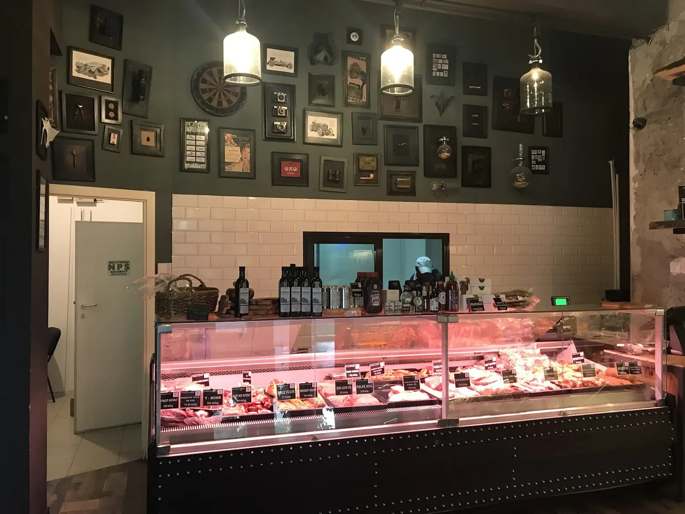
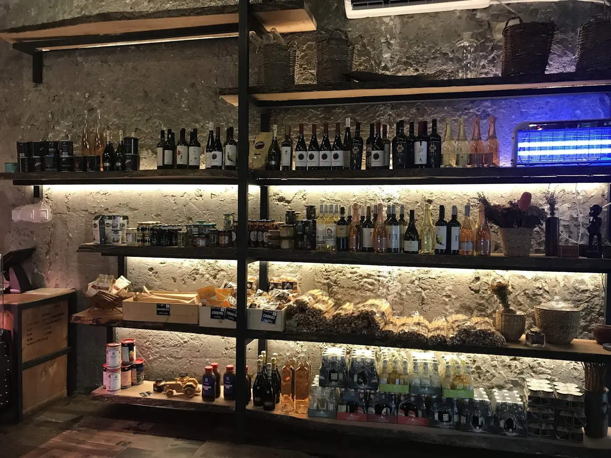
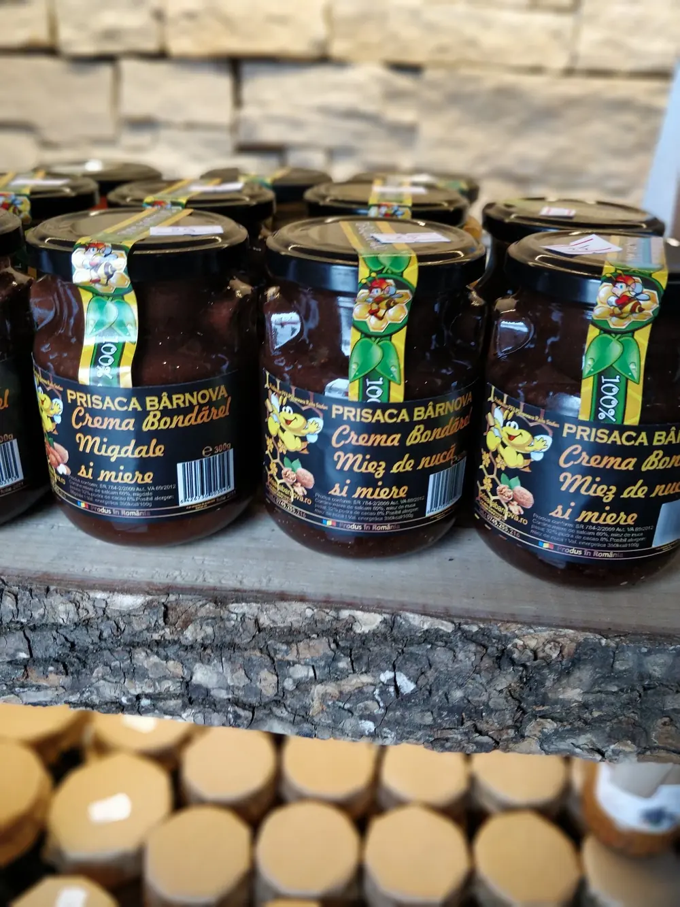
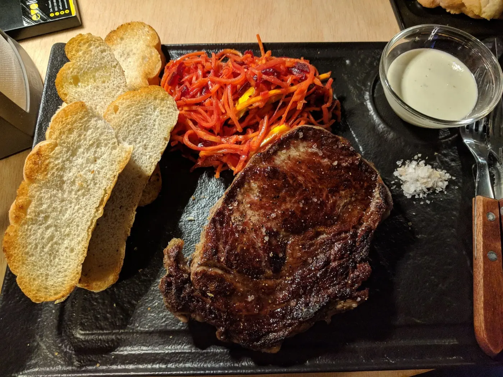
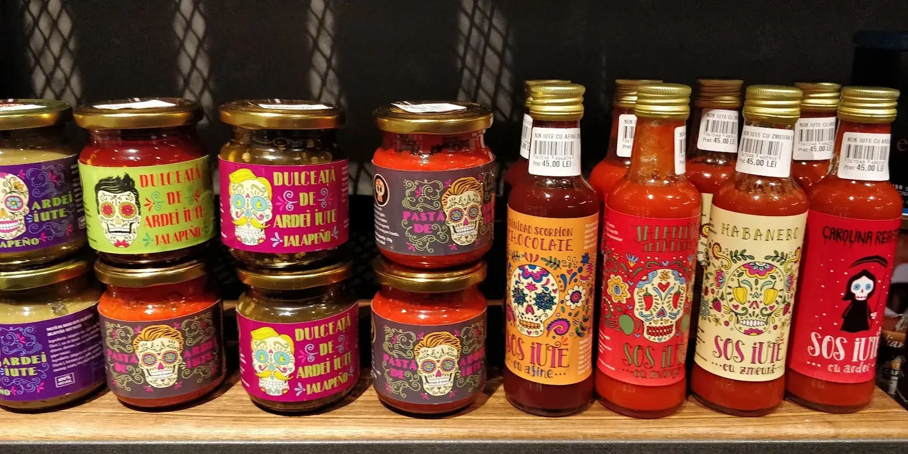

{{Măcelărie · Nicolina & Păcurari · Iași|Butcher · Nicolina & Păcurari · Iași|Talho · Nicolina & Păcurari · Iași}}
{{Alege tăietura. Noi o pregătim.|Pick the cut. We’ll prepare it.|Escolha o corte. Nós preparamo-lo.}}
{{Vită, porc, mici și pastramă din producția noastră, Black Angus pentru ocazii. Atinge o bucată de pe hartă, vezi ce avem în vitrină și comandă-o să o ridici de la Nicolina sau Păcurari.|Beef, pork, our own mici and pastrami, Black Angus for special days. Tap a cut on the map, see what’s in the case and order it to collect at Nicolina or Păcurari.|Vaca, porco, mici e pastrami feitos por nós, Black Angus para ocasiões. Toque num corte do mapa, veja o que há na vitrina e encomende para levantar na Nicolina ou em Păcurari.}}

{{La tejghea|At the counter|Ao balcão}}
{{Carnea stă la vedere. Și eticheta la fel.|The meat is on show. So is the label.|A carne está à vista. E a etiqueta também.}}
{{O vitrină lungă, cu fiecare tavă etichetată: ce e, de unde vine, cât costă kilogramul. Spui cât îți trebuie și cum s-o tăiem: felii pentru grătar, cuburi pentru tocană, fără os.|One long case with every tray labelled: what it is, where it’s from, the price per kilo. Tell us how much you need and how to cut it: slices for the grill, cubes for a stew, boneless.|Uma vitrina comprida com cada tabuleiro etiquetado: o que é, de onde vem, quanto custa o quilo. Diz quanto precisa e como cortar: fatias para grelhar, cubos para estufar, sem osso.}}
- {{„Produs România” pe etichetă|“Produs România” on the label|“Produs România” na etiqueta}}
{{Proveniența scrisă pe fiecare tavă din vitrină.|The origin written on every tray in the case.|A origem escrita em cada tabuleiro da vitrina.}}
- {{„Produs propriu”|“Our own product”|“Produção própria”}}
{{Mici, cârnați subțiri și pastramă de berbecuț, făcute de noi.|Mici, thin sausages and lamb pastrami, made by us.|Mici, salsichas finas e pastrami de borrego, feitos por nós.}}
- {{Și cămara de lângă|And the pantry next to it|E a despensa ao lado}}
{{Sosuri iuți, dulceață de ardei, miere de la Bârnova, vin.|Hot sauces, chilli jam, honey from Bârnova, wine.|Molhos picantes, doce de pimento, mel de Bârnova, vinho.}}
{{Din vitrină|From the case|Da vitrina}}
{{Patru etichete pe care le cauți|Four labels people come for|Quatro etiquetas que se procuram}}
{{Prețurile sunt cele de pe etichetele din vitrină și se pot schimba de la o zi la alta. La ridicare plătești greutatea exactă de pe cântar.|Prices are those on the labels in the case and can change from day to day. At pickup you pay the exact weight on the scale.|Os preços são os das etiquetas da vitrina e podem mudar de um dia para o outro. Ao levantar paga o peso exato da balança.}}
{{Două magazine|Two shops|Duas lojas}}
{{Aceeași vitrină, în două cartiere|The same counter, in two neighbourhoods|A mesma vitrina, em dois bairros}}
{{Cămara|The pantry|A despensa}}
{{Ce pui lângă friptură|What goes next to the steak|O que vai ao lado do bife}}




{{Harta tăieturilor|The cuts map|O mapa dos cortes}}
{{Fiecare bucată își are rostul ei|Every cut has its job|Cada corte tem a sua função}}
{{Atinge o bucată de pe animal: vezi ce e în vitrină din ea, prețul pe kilogram și la ce e bună. Pune-o în comandă și o ridici când îți convine.|Tap a cut on the animal: see what’s in the case from it, the price per kilo and what it’s good for. Add it to the order and collect when it suits you.|Toque num corte do animal: veja o que há na vitrina, o preço ao quilo e para que serve. Junte à encomenda e levante quando lhe der jeito.}}
| {{Produs|Product|Produto}} | {{Proveniență|Origin|Origem}} | {{Preț|Price|Preço}} |
|---|
{{Prețuri orientative, de pe etichetele din vitrină. Ce nu are preț: întreabă-ne, îți spunem când confirmăm comanda.|Indicative prices, from the labels in the case. Anything without a price: ask and we’ll tell you when we confirm the order.|Preços indicativos, das etiquetas da vitrina. O que não tem preço: pergunte, dizemos quando confirmarmos a encomenda.}}
{{Comandă pentru ridicare|Order for pickup|Encomenda para levantar}}
{{Ți-o pregătim. Tu doar treci s-o iei.|We get it ready. You just drop by.|Nós preparamos. Só tem de passar.}}
{{Alegi magazinul, produsele și cantitatea, spui cum s-o tăiem și când treci. Bonul se scrie singur; îl trimiți pe WhatsApp sau prin SMS și îți confirmăm.|Pick the shop, the products and the amount, say how to cut it and when you’ll come. The ticket writes itself; send it by WhatsApp or SMS and we confirm.|Escolha a loja, os produtos e a quantidade, diga como cortar e quando passa. O talão escreve-se sozinho; envie por WhatsApp ou SMS e confirmamos.}}
{{Despre noi|About us|Sobre nós}}
{{Raw since 2014. Scris chiar pe firmă.|Raw since 2014. Written on the sign.|Raw since 2014. Escrito no letreiro.}}
{{Un cap de taur desenat din linii drepte, „Carmangeria” cu litere mari deasupra ușii și o tejghea în care carnea se alege cu ochii. Asta e Meat Concept Store.|A bull’s head drawn in straight lines, “Carmangeria” in big letters above the door and a counter where you choose with your eyes. That’s Meat Concept Store.|Uma cabeça de touro feita de linhas retas, “Carmangeria” em letras grandes por cima da porta e um balcão onde se escolhe com os olhos. É isto a Meat Concept Store.}}
{{Cum lucrăm|How we work|Como trabalhamos}}
- {{Eticheta spune tot|The label says it all|A etiqueta diz tudo}}
{{Pe fiecare tavă: numele bucății, proveniența și prețul pe kilogram. Black Angusul e din SUA și scrie asta; restul, de cele mai multe ori, „Produs România”.|On every tray: the cut, the origin and the price per kilo. The Black Angus is from the USA and says so; the rest is mostly “Produs România”.|Em cada tabuleiro: o corte, a origem e o preço ao quilo. O Black Angus é dos EUA e di-lo; o resto é quase sempre “Produs România”.}}
- {{Ce facem noi|What we make|O que fazemos}}
{{Micii de vită și porc, cârnații subțiri și pastrama de berbecuț poartă eticheta „Produs propriu”.|The beef-and-pork mici, the thin sausages and the lamb pastrami carry the “Produs propriu” label.|Os mici de vaca e porco, as salsichas finas e o pastrami de borrego têm a etiqueta “Produs propriu”.}}
- {{Tăiat cum îți trebuie|Cut the way you need|Cortado como precisa}}
{{Spui la ce folosești carnea și o porționăm: felii pentru grătar, cuburi pentru tocană, oase pentru ciorbă.|Tell us what it’s for and we portion it: slices for the grill, cubes for stew, bones for soup.|Diga para que é e nós porcionamos: fatias para grelhar, cubos para estufar, ossos para sopa.}}
{{Din 2014, în Iași|Since 2014, in Iași|Desde 2014, em Iași}}
{{Azi, două magazine cu nota mare pe Google: 4,8 la Nicolina și 4,7 la Păcurari, din aproape nouă sute de recenzii adunate.|Today, two shops rated highly on Google: 4.8 at Nicolina and 4.7 at Păcurari, from close to nine hundred reviews between them.|Hoje, duas lojas com nota alta no Google: 4,8 na Nicolina e 4,7 em Păcurari, de quase novecentas avaliações juntas.}}
{{Galerie|Gallery|Galeria}}
{{Vitrina, rafturile, firma|The case, the shelves, the sign|A vitrina, as prateleiras, o letreiro}}
{{Magazine și program|Shops and hours|Lojas e horário}}
{{Nicolina sau Păcurari. Alege-l pe cel din drum.|Nicolina or Păcurari. Pick the one on your way.|Nicolina ou Păcurari. Escolha a que fica no caminho.}}
{{Fiecare magazin are numărul lui. Sună sau scrie direct acolo de unde vrei să ridici.|Each shop has its own number. Call or write straight to the one you’ll collect from.|Cada loja tem o seu número. Ligue ou escreva diretamente para a loja onde vai levantar.}}
{{E-mail:|Email:|E-mail:}} meatconceptstore@gmail.com